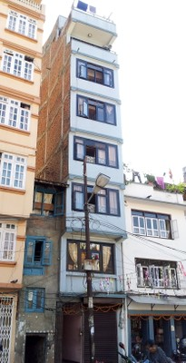
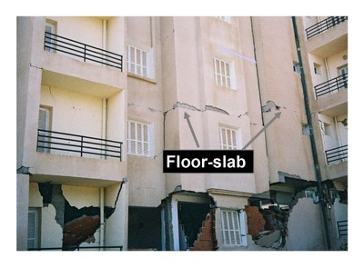
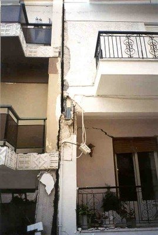
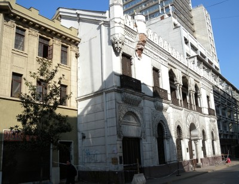
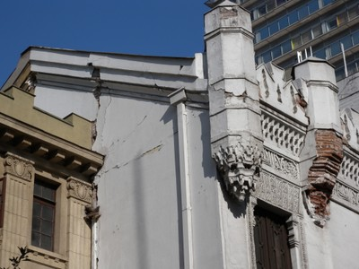
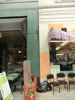
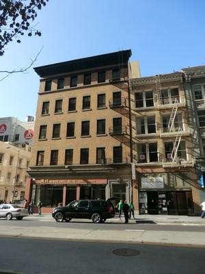

Potencial de golpeteo [POP]
Separación sísmica insuficiente o inexistente entre edificios, permitiendo que se golpeen y dañen el uno al otro en caso de movimiento. Dos edificios adyacentes pueden tener potencial de golpeteo si la separación entre éstoses menor al 4% de la altura (h) del edificio más bajo , e.g. menor que 400 mm para una altura h = 10 m.

Si x es menor que 4% de h, los edificios tienen potencial de golpeteo.


Muchos edificios adyacentes en centros urbanos sin separación sísmica tienen potencial de golpeteo, Seattle, USA (S. Brzev)

Edificios adyacentes de diferentes alturas,potencial de golpeteo, Kathmandu, Nepal (K. Porter)

Dos edificios adyacentes de concreto reforzado en un terreno pendiente sufrieron daños mayores en el terremoto de Boumerdes de 2003, Algeria; los edificios tenían un separación sísmica inadecuada y el efecto por golpeteo fue significativo debido a que los forjados estaban ubicados a diferentes elevaciones. (S. Brzev)

Daño por golpeteo en edificios de concreto reforzado con plantas a diferentes elevaciones en el terremoto de Atenas 1999 (A. Pomonis).


Daño por golpeteo en edificios adyacentes de diferentes alturas afectados por el terremoto de Turquía, 1999. (Gulat, Ascheim, and Spence, World Housing Encyclopedia Report 64)


Daño por golpeteo en Santiago, Chile debido al terremoto de 2010 (S. Brzev)

Daño en edificio de mampostería reforzada en Santiago debido al efecto de golpeteo en el terremoto de 2010 en the 2010(S. Brzev)

Daño por golpeteo en el terremoto de 2010 Chile. (S. Brzev)


Edificios adyacentes sin separación sísmica, potencial de golpeteo, San Francisco, USA (C. Scawthorn)


Edificios adyacentes de diferentes alturas, sin separación sísmica, potencial de golpeteo, San Francisco, USA (C. Scawthorn)